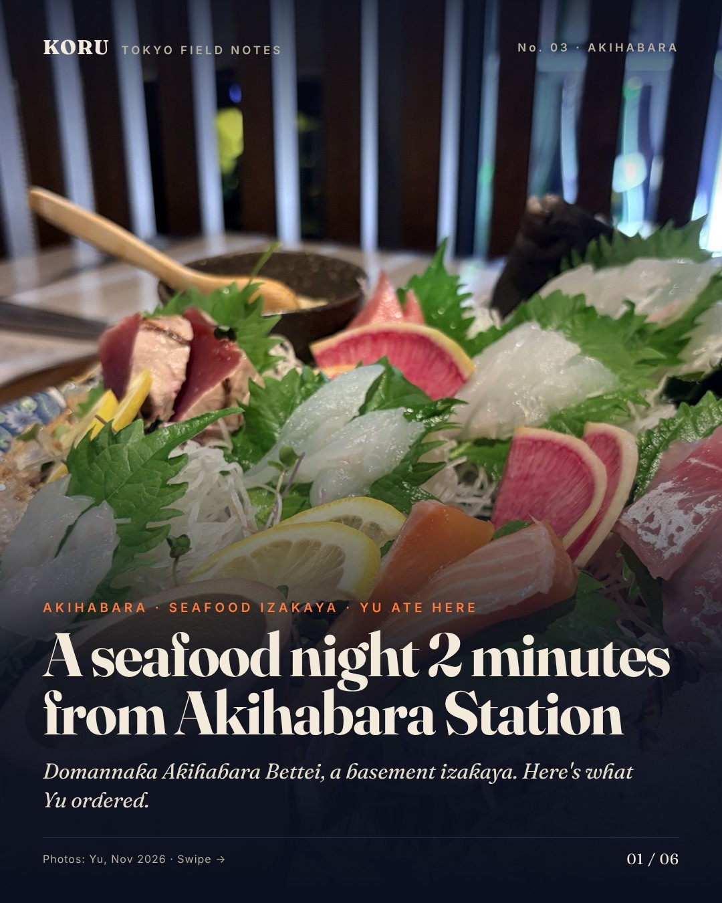
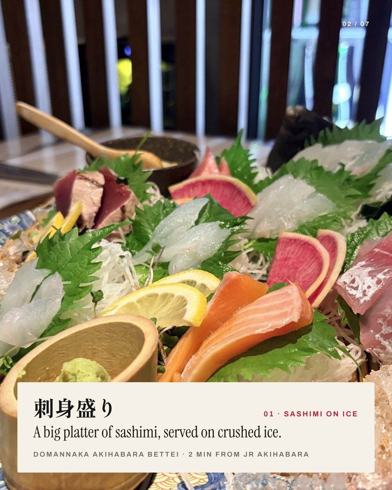
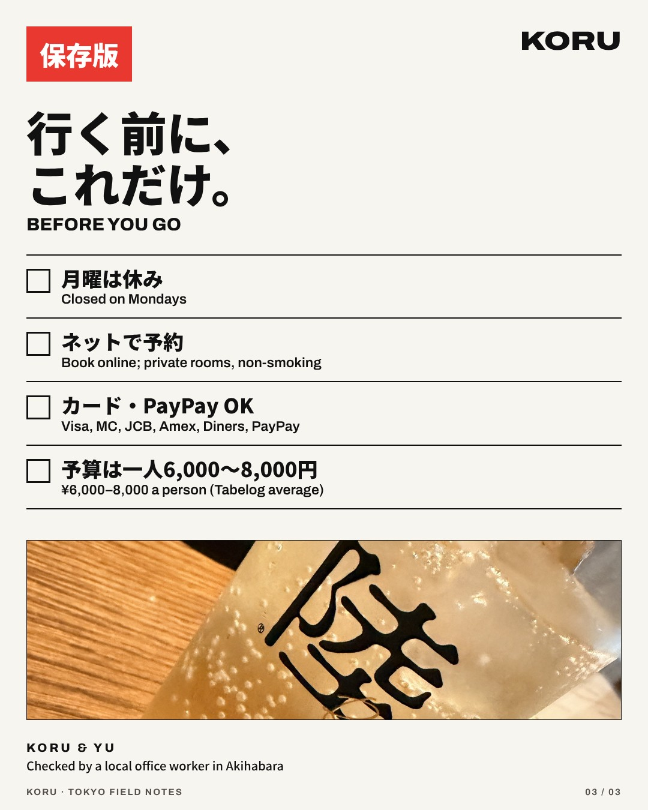
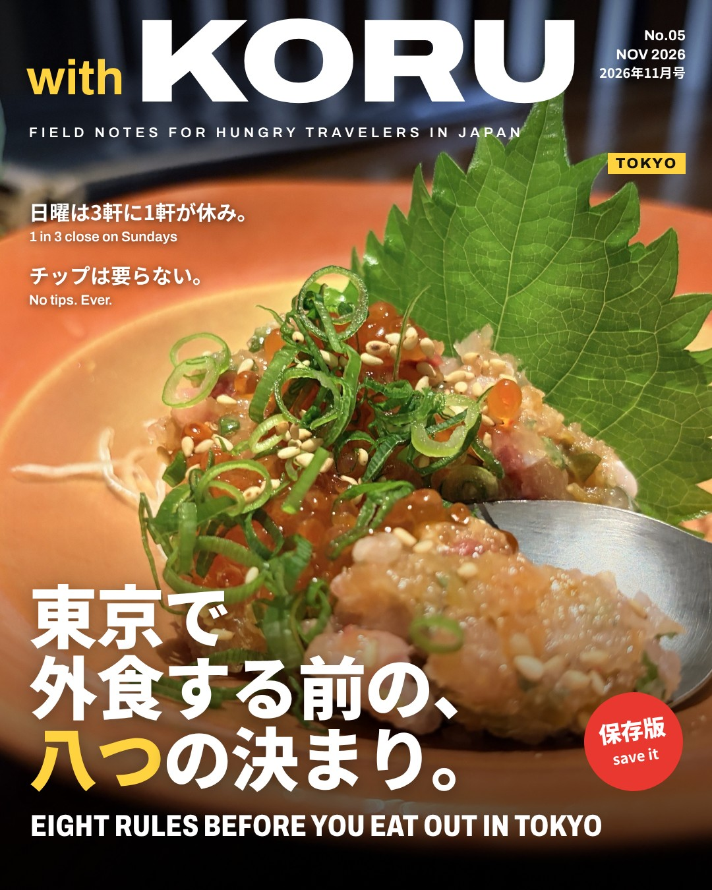
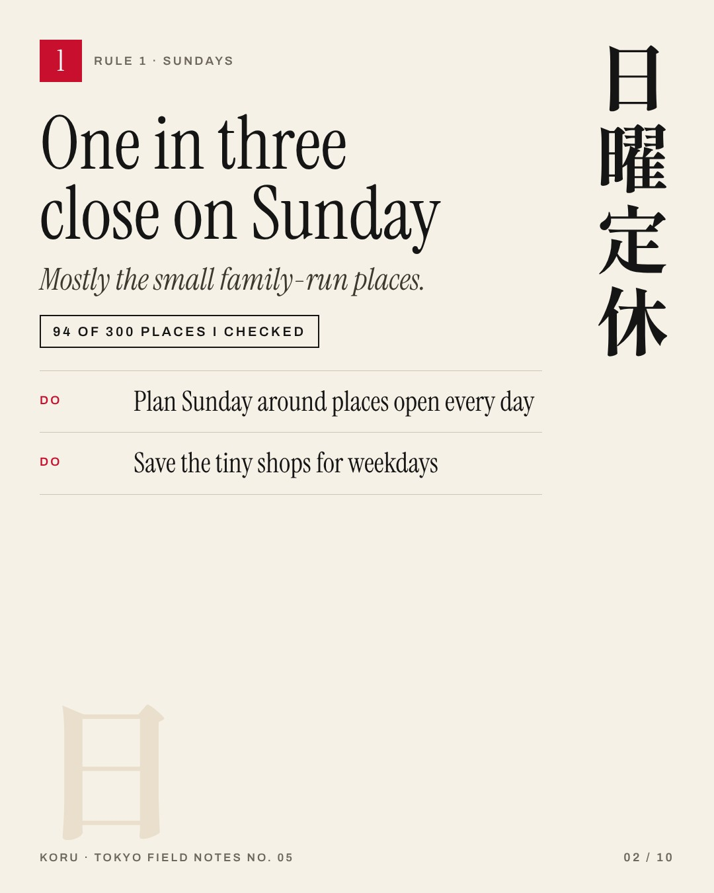
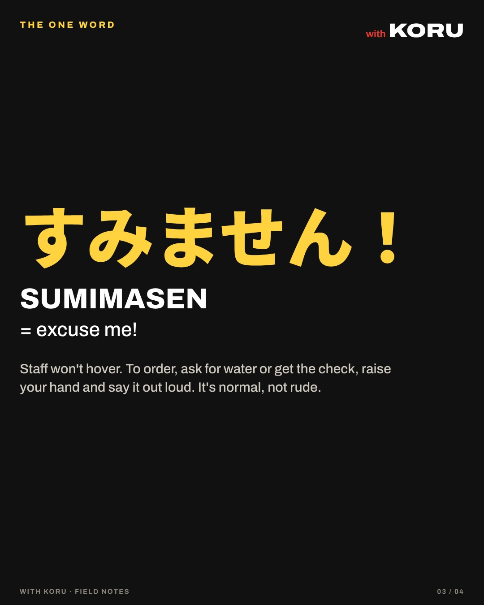
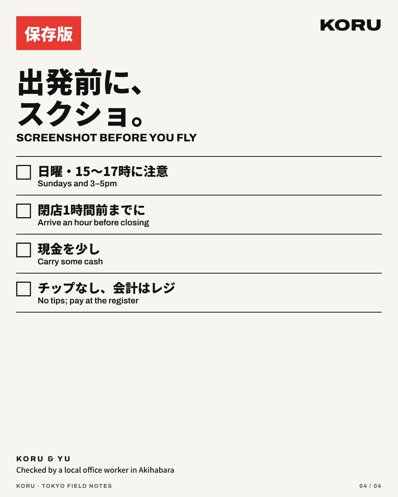

No.03 · TOKYO · AKIHABARA · 2026-11-12
秋葉原で、海鮮の夜。
A seafood night in Akihabara



FIELD NOTES FOR HUNGRY TRAVELERS IN JAPAN
Every issue, page by page. The same issues come out on Instagram, @koru.tokyo_guide.
No.03 · TOKYO · AKIHABARA · 2026-11-12
A seafood night in Akihabara



No.05 · TOKYO · 2026-11-12
Eight rules before you eat out in Tokyo



